技术架构 · 功能架构 · 用户操作 · 部署运维
版本 1.0 · 2026-11-14 · 源码基线 cf57fb3
本文件使用真实应用前端与虚构演示数据。未连接生产、未向客户发信、未发布社媒。SQL 和凭据通过私有流程配套；截图不代表生产验收。
系统：领客AI · LeadPilot AI｜文档版本：1.0｜分析日期：2026-11-14
分析基线：cf57fb3。本说明基于仓库源码和 Compose 配置，不等同于生产环境巡检或性能验收。界面截图使用本地已有前端构建与虚构数据，详见《操作手册》的截图说明。
系统是在 BillionMail 邮件服务基础上扩展的 B2B 获客、内容营销和客户跟进平台。内部 Go 模块名仍为 billionmail-core，部分容器、目录与协议名称保留 BillionMail / MapleMail，外部品牌为 LeadPilot AI。
后端是模块化单体：HTTP API、业务服务、定时器、持久化工作队列在同一 Go 应用内运行；邮件协议组件以独立容器运行。Growth Master 的 14 项业务技能是应用内注册的逻辑能力，不是 14 个独立微服务。本仓库没有独立消息中间件、独立 Agent 云服务或通用可视化 DAG 引擎的部署依赖。
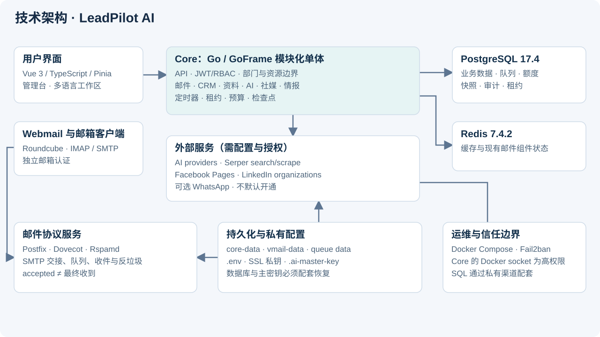
图源：Mermaid 技术架构。
| 层级 | 源码/配置依据 | 技术与职责 |
|---|---|---|
| 管理界面 | core/frontend/package.json |
Vue 3、TypeScript、Vue Router、Pinia；Naive UI 组件；Vue I18n 多语言 |
| 前端构建 | 前端 scripts / pnpm 锁文件 | Rsbuild、Node.js 22；pnpm 锁定依赖；Axios 请求、SSE 流式响应、ECharts 图表 |
| 应用服务 | core/go.mod |
Go 模块声明 1.22，工具链 1.23.2；GoFrame v2.9；业务控制器和服务 |
| 关系数据库 | docker-compose.yml |
PostgreSQL 17.4：业务数据、权限、执行记录、任务租约、额度预留、审计 |
| 缓存/配置辅助 | Compose / Redis 服务 | Redis 7.4.2：现有缓存与邮件组件相关状态；不可把所有任务状态理解为仅保存在 Redis |
| 出站邮件 | Postfix / 中继服务 | SMTP 接收与转交、邮件队列、中继、发送身份；应用接收结果不等于最终收件 |
| 收件与邮箱 | Dovecot / Roundcube | IMAP/POP3、邮箱认证与存储；Roundcube Webmail 经 Core/PHP-FPM 对接 |
| 反垃圾与防护 | Rspamd / Fail2ban | 垃圾邮件分析、DKIM 配置及现有访问防护 |
| 外部集成 | aimodels / growth / social |
AI 服务、Serper 搜索/抓取、Facebook Pages、LinkedIn 组织主页、可选 WhatsApp |
版本为代码声明或 Compose 默认值，不保证目标服务器正在运行相同镜像。AI 服务商的模型能力、审批和接口版本需要运营人员实际验证。
默认 Compose 定义七项应用服务：PostgreSQL、Redis、Rspamd、Dovecot、Postfix、Roundcube 和 Core。Core 承担管理台/API、部分公开页面与反向代理；邮件协议由相应组件处理。
127.0.0.1:25432；Redis 默认 127.0.0.1:26379。不要直接公开数据库和缓存端口。SafePath 是管理入口附加访问控制，不代替 JWT、账号状态、RBAC、TLS 或防火墙。:ro，也不代表 Docker API 只能执行只读操作；应视为高权限信任边界。前端位于 core/frontend/src，包含路由、页面、业务 features、状态 store、API 客户端和组件库。
router/modules 定义菜单与页面；菜单按稳定标识排序，多语言标题不作为可靠权限键。router/index.ts 检查本地登录状态，读取服务端 Principal，再按服务端账号权限决定页面访问。features/workspace/api.ts 维护部门、角色与权限目录；页面按钮按操作权限展示。store/modules/workbench 管理多标签工作区、活动页和请求归属；关闭/切换页面时避免旧请求污染新页面。api/index.ts 为请求加入 Bearer Token 和 Accept-Language，统一处理业务返回、下载、错误和取消。{code, success, msg, data}。前端隐藏按钮只是用户体验，服务端仍必须逐项授权。语言资源包含中文、英文、日文、德文、土耳其文和越南文；本次正式交付中英文指南，不代表所有语言均完成业务术语人工审校。
| 模块 | 主要职责 | 入口/源码 |
|---|---|---|
| 系统启动与路由 | 数据初始化、模型配置迁移、定时器、公开页面及 API 注册 | core/internal/cmd/cmd.go |
| 部门与治理 | Principal、角色数据范围、共享策略、授权、旧接口边界 | service/governance、controller/enterprise |
| 邮件营销引擎 | 任务、计划、自动化、API 邮件、共享限速、SMTP 交接 | service/batch_mail |
| 资料与 AI 拓客 | 文件、产品、识别、公开网站证据、线索验证、开发信、询盘 | service/growth；/api/growth/action |
| 智能情报 | 行业包、14 项技能、6 条工作流、审批、预算、审计 | growth/master_*.go；growth action master |
| 社媒营销 | OAuth、账号授权、内容版本、人工审核、排期、投递及统计 | service/social；/api/social/action |
| 客户管理 | 客户、邮件同步、跟进、AI 回复草稿和人工发送 | service/crm；/api/crm/action |
| 模型注册中心 | 统一模型引用、服务商配置、能力筛选、凭据加密 | service/aimodels、service/aicredentials |
| 运维组件 | 域名/DNS、邮箱、中继、邮件统计、SSL、容器服务 | 对应 domains、mail_boxes、mail_service 等 |
许多业务采用 action 型 POST 接口，不应凭菜单名推测 REST URL。自动化集成应按对应请求类型、授权与源码接口实现，避免直接写数据库或调用未审查旧接口。
业务访问链路为：入口策略 → JWT 校验 → 账号/部门/角色状态 → 操作权限 → 数据范围 → 资源或邮箱授权 → 业务状态检查。
数据范围包括本人、本部门、本部门及下级、指定部门和全部。操作权限和授予该权限的角色范围绑定，不能简单把全部角色权限和范围分别求最大值。邮箱授权与角色权限分离：具备发送权限仍需拥有相应邮箱的授权。
旧管理接口通过 LegacyBoundary 限制普通成员访问，防止旧查询缺少部门条件。账号和角色变化通过 Token 版本等机制影响已有会话；后台发送时也要重新检查授权，不只在创建草稿时校验。
上传文件使用私有路径及授权下载，外部内容、文件名、ZIP 路径、网页地址和 AI 输出均需视为不可信输入。AI 生成邮箱不能代替公开证据；AI 生成内容不能自动代替审批或合同承诺。
| 数据域 | 主要表/实体 | 关键关联 |
|---|---|---|
| 身份与治理 | account、role、account_role、bm_departments、bm_resource_grants、bm_send_policies、bm_security_audit |
账号、角色、部门、操作权限与资源授权 |
| 联系人与营销 | bm_contact_groups、bm_contacts、bm_tags、email_templates、email_tasks、bm_campaign_schedules、bm_automation_rules |
部门/负责人、受众、模板、任务、订阅状态 |
| 资料与拓客 | bm_growth_companies/products/assets/versions、bm_growth_plans/runs/leads/messages/inquiries/jobs |
公司资料版本 → 执行 → 证据 → 线索 → 开发信 |
| 智能情报 | bm_gm_packs/workflows/runs/steps/evidence/prospects/contents/events/usage/audit |
行业配置和技能快照、运行检查点、审批、成本与审计 |
| 社媒 | bm_social_accounts/plans/variants/deliveries/interactions/metrics/jobs |
账号授权 → 内容版本 → 冻结投递 → 外部回执 |
| CRM | bm_crm_customers/messages/followups/mailbox_sync |
客户、邮件会话、跟进、邮箱同步游标 |
| 邮件基础 | domain、mailbox、recipient_info、bm_options 等 |
域名、邮箱、订阅/收件人与系统配置 |
表名前缀组合是数据域摘要，不是完整数据库 DDL。实体之间还存在业务校验、快照和逻辑归档，不能仅以外键推断删除行为。
私有增长资料目录默认为 core/data/growth-files，可用 MAPLEMAIL_GROWTH_DATA 覆盖；模型凭据主密钥 .ai-master-key 存放在对应私有目录。数据库备份必须与该主密钥、资料目录、邮件数据和配置配套，不能只恢复数据库后宣称可正常解密。
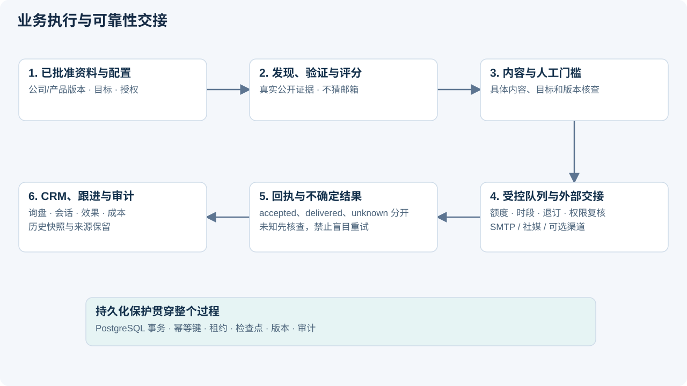
定时器启动 Growth、Social、邮件任务、导入任务、计划、邮件日志聚合等循环。数据库保存工作状态、检查点、额度、唯一键和租约；典型领取使用 FOR UPDATE SKIP LOCKED，配合唯一租约标记。
发送限制可同时作用于系统、部门、邮箱、IP、服务商和任务。某层设为 0 只取消该层附加限制，不绕过上层限制。额度预留使用事务及 PostgreSQL advisory lock 等机制；失败尝试可能仍计入保守预留，不应假设失败自动退款。
对 HTTP/SMTP 提交结果不明确的情况保留 unknown，人工核查后才能决定重试。暂停/取消通常只影响后续执行，不撤回已进入 Postfix 或已经在社交平台发布的内容。应用 SMTP accepted、Postfix delivered 和最终客户阅读是不同观测层级。
模型注册中心集中管理服务商、HTTPS 基础地址、协议、模型 ID、启用状态和能力（text/chat/vision/image/embedding）。标准模型引用形式为 ai::<provider>::<model>。
go:embed 引用它们。仅克隆公开仓库不能直接完成后端构建；需私有配套脚本。.env、env_init、证书私钥、资料主密钥和访问令牌上传 GitHub。后续部署、备份、回滚及排障见《运维指南》。
领客AI · LeadPilot AI｜版本 1.0｜2026-11-14｜源码基线 cf57fb3
系统将“准备可信业务资料 → 获取公开证据 → 发现候选客户 → 验证联系人 → 生成内容 → 审批与合规投递 → 处理回信 → CRM 跟进与效果分析”连接在同一管理台内。它不是承诺自动成交或自动获得合法营销许可的系统。
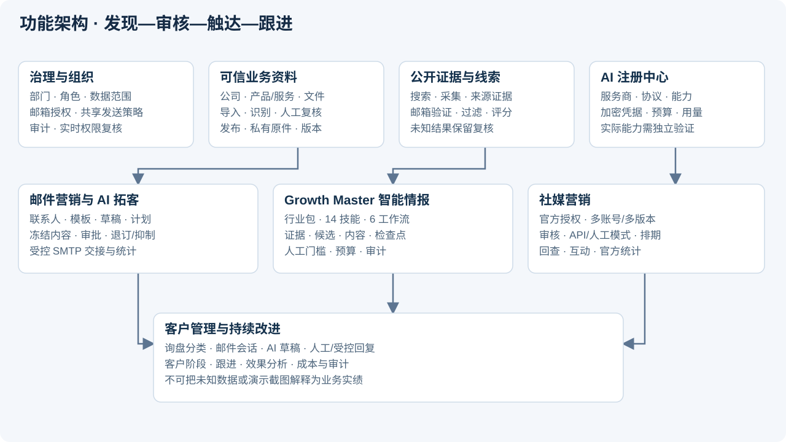
图源：Mermaid 功能架构。
| 功能域 | 页面/入口 | 输入与核心操作 | 输出及边界 |
|---|---|---|---|
| 登录与工作区 | /login、/workspace |
账号、部门、角色、工作区标签、权限 | 服务端授权范围内的功能；管理员和普通成员界面可能不同 |
| 数据概览 | /overview |
域名、时间范围、邮件日志/统计 | 投递、打开、点击、退信、队列等；覆盖范围与未知值需分开解释 |
| 部门与权限 | 工作台的部门、成员、角色、邮箱授权、发送策略 | 部门树、角色范围、操作权限、邮箱授权 | 数据隔离、共享限制、审计；邮箱授权不等于角色权限 |
| 联系人与标签 | /contacts 或工作台对应标签 |
分组、邮箱、导入文件、筛选关键词、确认/订阅状态、标签 | 可用受众、导入进度和复核结果；发现地址不代表营销许可 |
| 模板与邮件营销 | /template、/market 或工作台 |
HTML/AI 模板、受众、发件箱池、主题、策略、审核 | 独立任务、冻结内容、队列和统计；暂停不撤回已提交邮件 |
| 计划与自动化 | 工作台计划/自动化、/automation |
一次/每日/每周/每月、时区、订阅确认与顺序条件 | 每次独立运行；自动化是受控顺序规则，不是任意节点画布 |
| 发信 API | /send |
API 权限、业务受众与模板、合法凭证 | 接入统一发送控制；不能绕过部门范围和全局限额 |
| 资料中心 | /materials |
公司/品牌事实、产品、文件、导入映射、识别和发布 | 已发布对外资料、版本快照、私有原文件、待复核行 |
| AI 智能拓客 | /outreach |
公司/已发布产品、市场、搜索要求、验证、发送策略 | 候选、线索、开发信、询盘与后台任务；只使用来源中真实出现的邮箱 |
| 智能情报获客 | /intelligence |
行业包、技能、六类工作流、质量阈值、预算 | 证据、候选池、内容审批、执行检查点、成本与审计 |
| 社媒营销 | /social |
官方账号授权、平台/市场/语言、多版本内容、人工审核和排期 | 发布记录、人工发布提醒、日历、互动及统计；受平台权限约束 |
| CRM 客户管理 | /crm |
客户、邮箱同步、会话、阶段、跟进记录、AI 草稿 | 询盘、回复与跟进；AI 草稿不自动等于已发送回复 |
| 模型注册中心 | /settings/ai-model，相关模块中的 AI 设置入口 |
服务商、协议、模型能力、密钥、预算 | 统一模型选项与加密凭据；保存配置不证明联网调用成功 |
| 邮件基础与运维 | /domain、/mailbox、/smtp、/logs、/settings |
域名/DNS、邮箱、SSL、中继、队列、容器和系统配置 | 收发基础设施与问题诊断；高权限操作需管理员审核 |
导航地址描述源码中的路由，不包含部署专属 SafePath，也不是公开生产入口。部分业务菜单对管理员保留旧页面，对普通成员展示部门化工作台；操作手册以工作台的统一业务流程为主。
| 角色 | 推荐职责 | 必须额外校验 |
|---|---|---|
| 系统管理员 | 部门、账号、角色、邮箱授权、AI/平台配置、基础运维 | 最小授权、主密钥与备份、全局发送限制 |
| 资料维护人员 | 公司和产品事实、导入、文件识别与复核 | 人工修改保护、敏感字段、公开/内部区分 |
| 内容审核人员 | 资料发布、邮件/社媒内容审核、事实与来源核查 | 版本、国家语言、商标/合规、退订和对外承诺 |
| 营销操作员 | 受众、草稿、计划、内容版本与执行监控 | 邮箱/主页授权、发送窗口、预算、客户冷却 |
| 销售/客服 | CRM、询盘、跟进、回复草稿与人工发送 | 正确客户/邮箱、敏感信息、承诺与重复回复 |
| 审计/只读人员 | 统计、执行结果、来源证据及操作审计 | 只读权限、部门范围、导出权限 |
推荐分工是配置原则，不是系统内固定角色名称。实际能力由操作权限、角色数据范围、资源授权和实时状态共同决定。
“验证通过”是当次探测结果，不是永久可达保证；“平台/SMTP 已接受”不是客户已收到或已阅读。
Growth Master 用单一逻辑规划器协调固定注册的技能，并保存执行快照。每个技能可配置启用状态、模型、超时、重试、条数和输出预算。
| 编号 | 技能 | 关键质量门槛 |
|---|---|---|
| S01 | 全球新闻监测 | 公开来源与采集覆盖 |
| S02 | 市场趋势分析 | 引用必须对应实际证据，保留不确定性 |
| S03 | 产品热点识别 | 观察信号不冒充销售统计 |
| S04 | 采购意向识别 | 日期与证据来源 |
| S05 | B2B 公司发现 | 公开网站与去重 |
| S06 | 联系人情报 | 联系方式必须出现在来源中 |
| S07 | 数据清洗 | 有效、无效、无法确认、过滤分开处理 |
| S08 | 线索评分 | 缺失事实计零，记录规则版本和评分分项 |
| S09 | 产品/服务匹配 | 只引用批准的业务对象及可证实条件 |
| S10 | AI 内容生成 | 首次触达或发布前核查具体内容和目标 |
| S11 | 营销编排 | 审批、权限、退订/抑制、预算和授权共同满足 |
| S12 | 回信理解 | 分类和草稿；禁止未经授权的合同承诺 |
| S13 | 增长分析 | 缺失指标保留未知，不伪造数据 |
| S14 | 数据同步与审计 | 部门范围、去重、CRM 关联与审计 |
| 工作流 | 技能序列 | 业务目的 |
|---|---|---|
| WF01 | S01 → S02 → S03 → S14 | 行业/市场观察与热点整理 |
| WF02 | S04 → S05 → S06 → S07 → S08 → S09 → S14 | 采购意向驱动的候选发现与筛选 |
| WF03 | S05 → S06 → S07 → S08 → S09 → S14 | 常规公开 B2B 客户发现 |
| WF04 | S10 → S11 → S14 | 多语言内容、审核与渠道交接 |
| WF05 | S12 → S08 → S09 → S14 | 来信理解、机会评分和跟进 |
| WF06 | S13 → S02 → S14 | 日常效果、成本及改进分析 |
行业包定义产品/服务类型、术语、买家类型、意向词、排除词、字段、评分权重、置信度和禁止声明。AI 扩词需要勾选确认，不能当作真实采购证据。
工作流包含 waiting_approval、waiting_external、configuration_required、budget_exhausted 等受控等待场景；修复原因后按操作入口恢复，不把等待统一解释为失败。已有生产计划不会因为创建行业包自动加入新工作流。
公司/任务材料 → 内容版本 → 平台/账号/市场匹配 → 人工审核 → 排期 → 账号授权及预算复核 → 外部提交 → 结果回查 → 互动与官方统计。
unknown；删除任务不删除平台已有帖子。—，不能当成零；帖子触达人数之和不代表独立用户数。联系人确认、订阅、启用、验证和营销许可是不同属性。导入为已确认联系人可能触发启用的订阅自动化，导入前必须核查。
自动化支持等待、始终发送、上一封已打开、已点击或未打开等顺序条件，且通常只纳入规则建立后新确认联系人。跟踪信号可能受邮件代理或安全扫描影响。
计划按时区运行并防止重叠；停机后的补运行不是集中补发所有历史日期。权限撤销、负责人部门变化、邮箱授权撤销和退订会影响后续任务。
| 验收域 | 至少应验证 | 本次文档交付是否代表已完成 |
|---|---|---|
| UI | 路由、组件、多语言、可见入口 | 截图使用真实前端组件和虚构数据；不代表后端联调 |
| 权限 | 部门隔离、角色范围、文件下载、后台再校验 | 仅说明实现；生产仍需实际权限测试 |
| 邮件 | 内部测试邮箱、最终投递、退订、退信、unknown | 未向真实客户发送 |
| AI/搜索 | 正确协议、密钥、预算、引用和失败处理 | 未在本次文档任务中调用付费服务 |
| 社媒 | 官方授权、审批、发布/人工模式、回查与统计 | 未真实授权或发帖 |
| 运维 | 私有 SQL、主密钥、完整备份、恢复演练 | 文档提供流程，未修改生产服务 |
详细操作步骤、截图和常见错误见《操作手册》与《运维指南》。
领客AI · LeadPilot AI｜中文用户指南｜版本 1.0｜2026-11-14
本手册以源码基线 cf57fb3 的业务实现为依据。截图由真实前端组件在 Microsoft Edge 无头浏览器中渲染，使用本地已有前端构建和虚构演示数据；未连接生产后端，也未使用真实账号、客户、令牌或商业数据。全部截图带演示标识。截图所示计数、域名 example.com、邮箱 example.org 和公司均不是业务实绩。
这不是手绘界面原型，但也不是生产实况或后端联调证明。前端构建指纹、源码基线、截图列表与浏览器错误记录见 assets/screenshot-provenance.json。页面、按钮和可用选项取决于部署版本、语言、权限和配置。
操作规则：先保存草稿、再审核、最后执行；外部提交结果不明确时先核查，不直接重试。 本次文档生成未向客户发信、未发布社媒、未调用付费 AI 或搜索服务。
| 顺序 | 操作 | 完成标准 |
|---|---|---|
| 1 | 管理员确认 HTTPS、管理入口、基础服务和私有备份 | 不使用共享默认密码，数据库与 Redis 不公开 |
| 2 | 配置部门 → 角色/范围 → 成员 | 普通成员不能访问无关部门和系统管理接口 |
| 3 | 授权发件邮箱与配置发送策略 | 有限速、有授权、有受控测试邮箱 |
| 4 | 配置域名、DNS、SSL 与 SMTP/中继 | 用自有测试邮箱完成最终收发验证 |
| 5 | 配置 AI 服务商、模型能力和预算 | 实际接口测试通过，密钥不回显 |
| 6 | 建立公司、产品和资料，复核后发布 | 对外内容事实准确，内部敏感资料排除 |
| 7 | 小范围导入联系人并检查订阅/确认状态 | 合法来源、过滤与复核明确 |
| 8 | 创建不自动发送的试用计划或草稿 | 先核查证据、内容、预算和目标 |
| 9 | 审核后仅向受控目标试发 | 核对最终收件、退订、回信和统计 |
公开仓库按要求不含 SQL、运行凭据、私钥或安装包。部署前必须按《运维指南》准备匹配的私有数据库脚本，不能将 GitHub 克隆成功当作应用已安装。
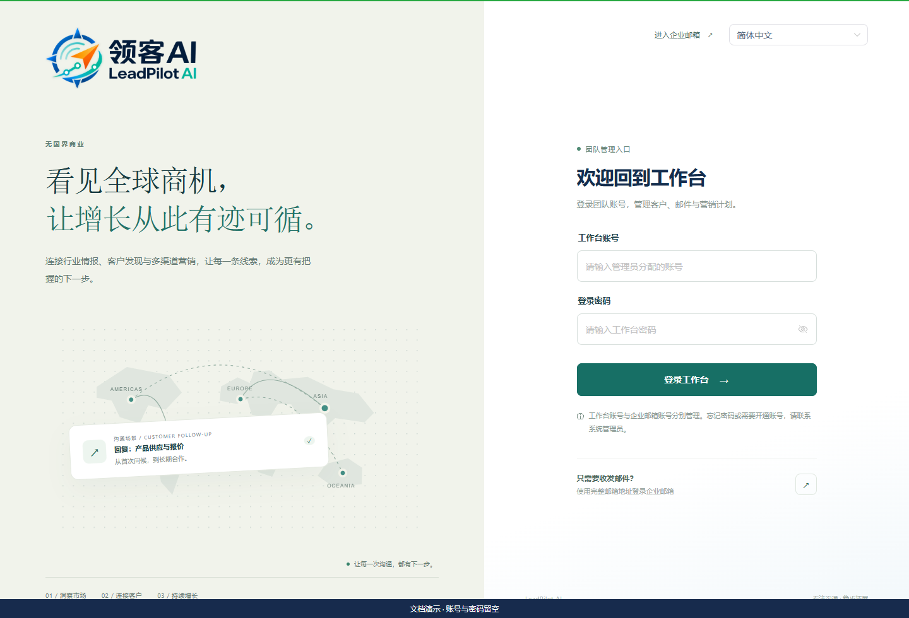
工作区切换会保持部分页面状态，但未保存编辑不应视为已写入数据库。浏览器刷新、页面刷新和任务执行是不同操作。
进入 部门工作台 → 部门：新增名称，选择父部门，设置启用状态，保存。先建立部门树，再创建成员，避免历史数据归属不清。
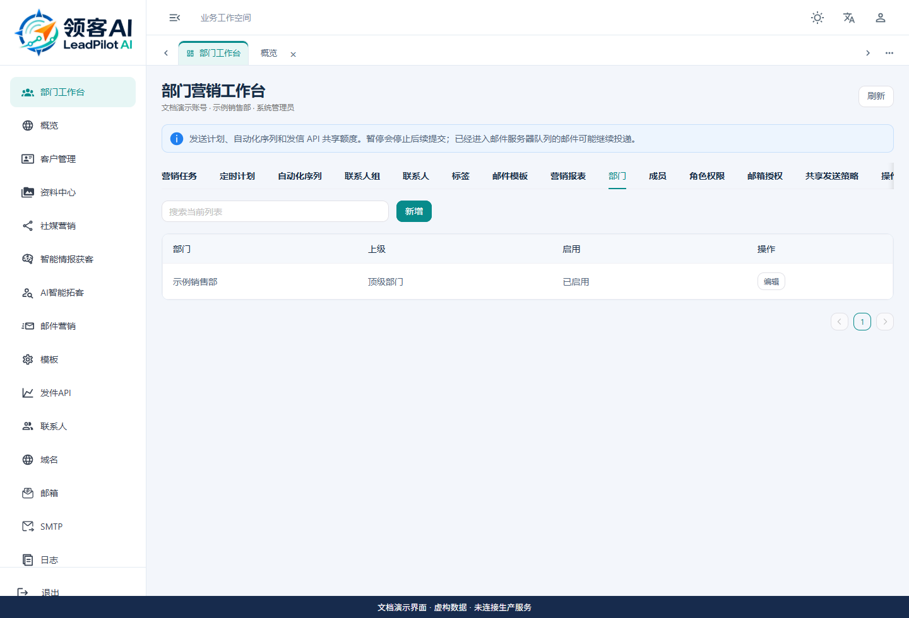
进入工作台的角色管理标签，设置角色名、操作权限和数据范围。推荐先选最小范围，确认业务确需后再扩权。
创建、编辑、删除、导入、导出、发布和设置属于不同操作，不能只勾选“查看”后期待可以发布。
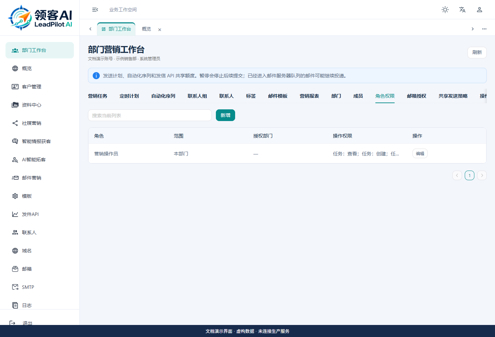
停用成员或部门不等于删除历史记录。员工调部门不会自动迁移全部历史业务数据，旧任务可能因归属不匹配停止。
进入 域名，维护业务域名、主机名、邮箱额度和相关设置。按系统生成的记录核对 MX、A、SPF、DKIM、DMARC，并由运维人员确认 PTR/出口 IP 和服务商出站 SMTP 政策。
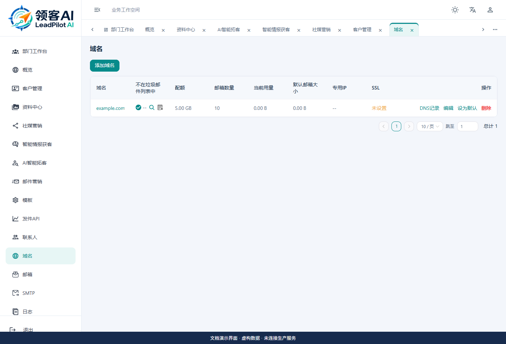
生产建议仅一个有效 SPF 记录，正确签名并验证 DMARC 对齐。不要在尚未验证投递的情况下盲目提高限制。SSL 私钥属于私有配置，不上传 GitHub。
进入 邮箱，选择域名，新增单个或批量邮箱，设置容量、状态和密码。
DEFAULT_NEW_MAILBOX_PASSWORD 时才可回退；未配置会拒绝创建。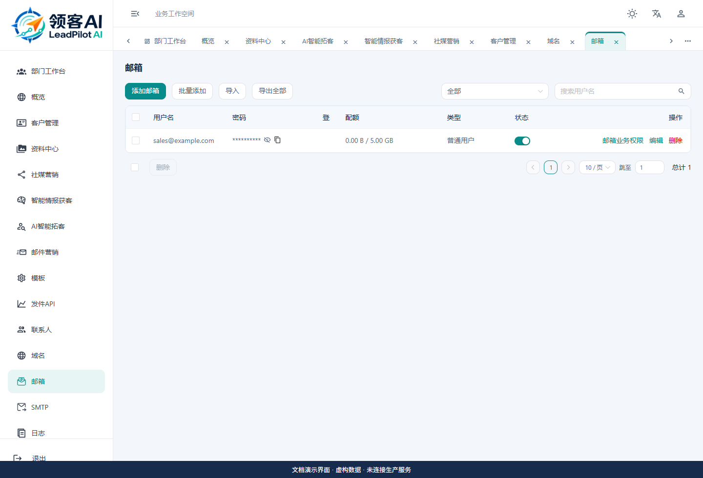
首次测试使用自己控制的邮箱，验证 SMTP 提交、最终到达、IMAP/Webmail 收件和回复。应用显示 accepted 不等于目标邮箱已经收件。
进入 设置 → AI 模型服务；社媒/拓客模块也提供相关设置入口，实际模型选择由统一注册中心管理。
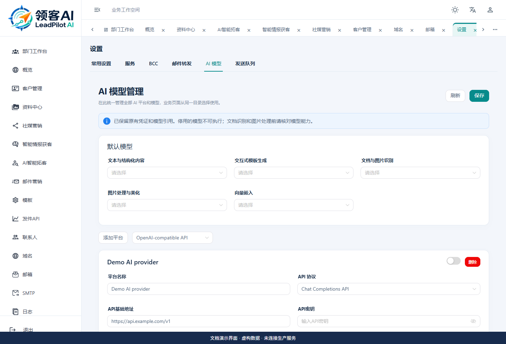
视觉、PDF 输入、图片生成和联网搜索是不同能力。不要将仅支持对话的模型用于直接 PDF 识别。供应商声明、系统选项和真实调用能力需分别核对。
进入 资料中心，先选择公司，或创建公司草稿。录入品牌、域名、产品/服务和可证实的业务事实。
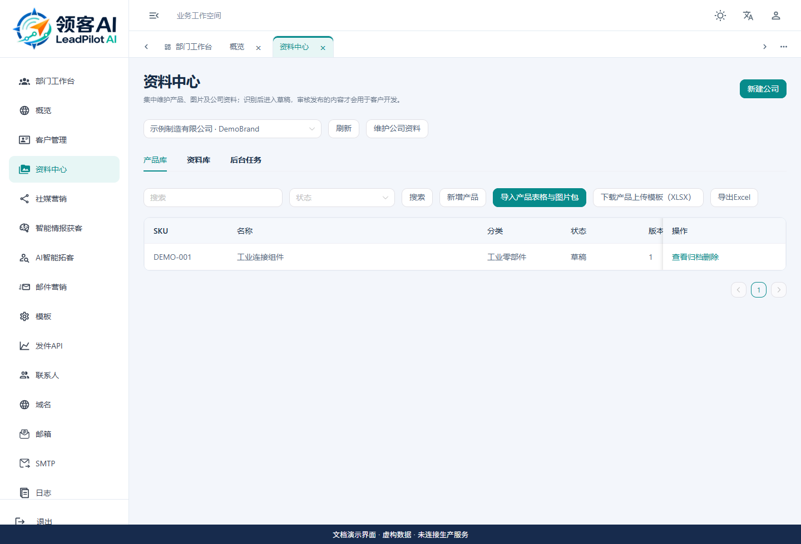
保存草稿后检查名称、业务范围、联系方式、服务承诺和证据。只有经过审核、明确发布的对外资料才应供自动营销使用。共享部门只能按授权读取已发布资料，内部文件不可自动变成公开内容。
ZIP 内的路径不能穿越目录，也不能放入私钥、数据库备份或敏感业务资料。公司资料、产品导入和社媒任务上传的格式/大小限制不同，以当前界面和后端配置为准，不混用一个统一上限。
上传 PDF、Office 文件或图片后，按需要允许 AI 识别并选择模型。先看抽取事实、证据位置和不确定项，再人工合并到草稿。成本、银行、凭据、内部采购等字段不得进入对外内容。发布后保留版本；资料变更可能使未发送开发信的旧快照失效。
普通业务人员可在工作台的联系人组、联系人和标签中操作；管理员也可能看到独立“联系人”页面。
在模板菜单或工作台模板标签新增模板，编辑 HTML 或使用 AI 辅助。预览布局、链接、品牌、纯文本/富文本效果和退订信息。合并变量按该页面模板语法使用，不直接从本手册猜测变量名。
进入 部门工作台 → 营销任务，点击新建：
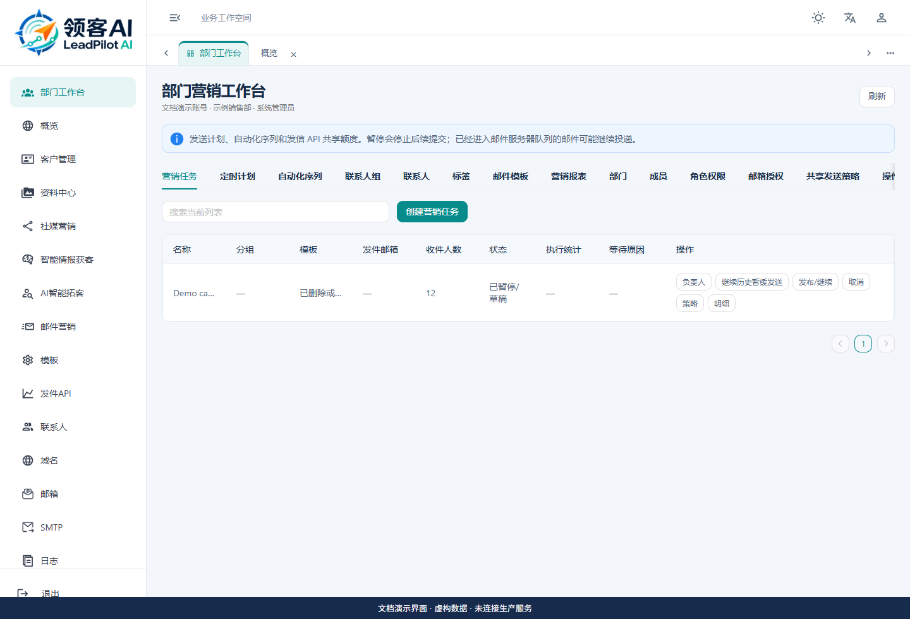
unknown 表示无法确认是否提交，管理员应先核对邮件队列和日志，不直接再次发送。一次/每日/每周/每月计划按指定时区运行，每次生成独立任务。月底日期和夏令时需要核对；停机后不会集中补发所有历史周期。
订阅自动化是有序步骤：等待、始终发送、前一封已打开、已点击或未打开。规则修改影响新的加入实例；已有实例保留快照。先使用测试联系人验证，再启用真实业务规则。
进入 AI 智能拓客，先维护并发布公司/产品资料。
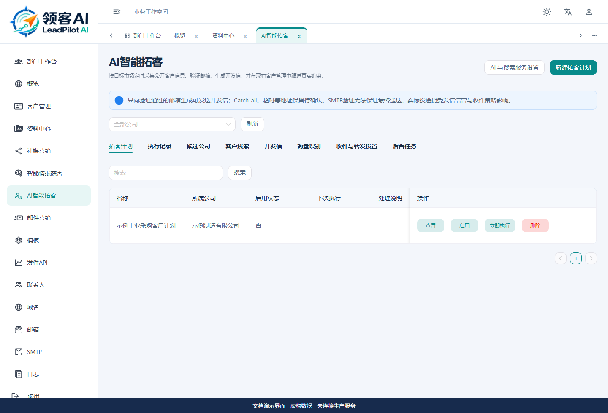
计划变更可能默认暂停。授权撤销、资料更新、退订、客户回信和冷却会影响后续交接。完成发现任务不意味着已经发送或成交。
进入 智能情报获客，选择公司。该模块是行业包、14 项技能和 6 类固定工作流的受控执行台，不是任意节点编排器。
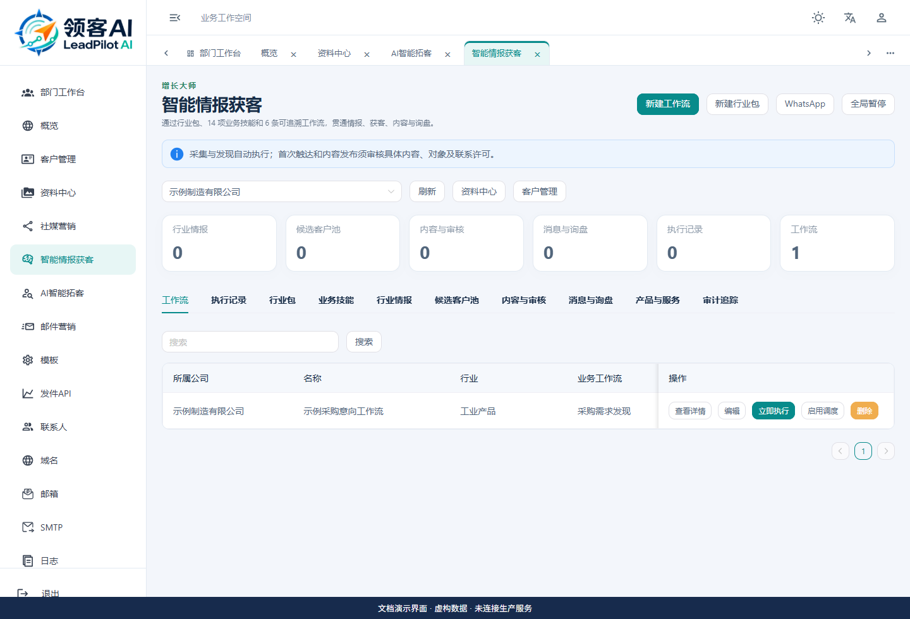
新建或复制行业包，配置产品/服务类型、术语、买家、意向词、排除词、来源、字段、评分权重、最低分/置信度和禁止声明。系统模板复制后编辑；AI 扩词需要人工勾选确认。
在业务技能标签为所需技能选择模型和条数、输出、超时/重试限制。先检查搜索、验证、资料和渠道能力，不要给所有技能无条件打开最大预算。
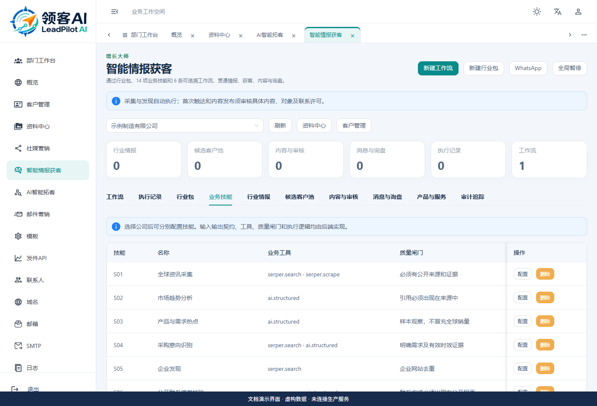
进入 社媒营销。先准备已发布公司资料及官方平台账号授权，再将任务从草稿推进到审核与排期。
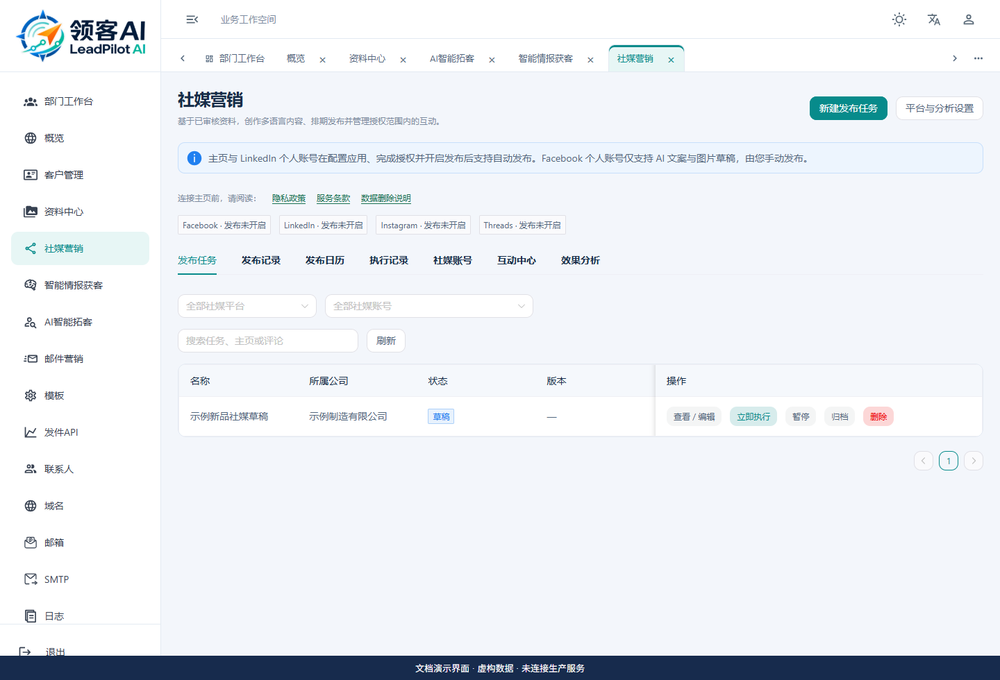
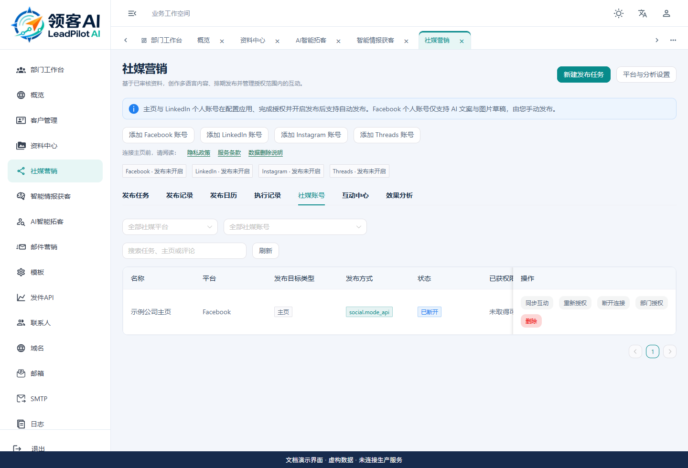
新建任务，选择公司、平台、国家、语言、账号和当地时间。上传或选择已批准资料，生成/手写各版本正文，预览链接、图片、段落、语言和来源事实。修改版本后重新审核；一个任务的不同市场可以对应多个授权账号。
国家/语言用于本地化，不等于平台广告地域定向。任务专用文件与资料中心发布文件是不同生命周期；归档到资料中心应显式操作。
批准后排期，核对时区和夏令时。API 模式由工作进程向获准平台提交；人工模式由操作员到平台实际发布后按界面确认，不能把“人工确认”当作系统自动发布凭证。
结果超时或未知时先核对平台帖子 ID 和归属，不盲目重试。删除任务或发布记录不等于删除平台帖子。平台已撤权或令牌过期时重新授权，不修改记录假装成功。
本地刷新仅读取已保存状态；平台同步才请求新的官方指标。查看采集时间、覆盖数量和 —，不要将缺失指标作为零。遵守平台对成员数据、评论、AI 使用及保留期的要求。当前指南不提供自动评论回复、广告或视频发布步骤。
进入 客户管理，按部门范围搜索客户、阶段与下一次跟进。
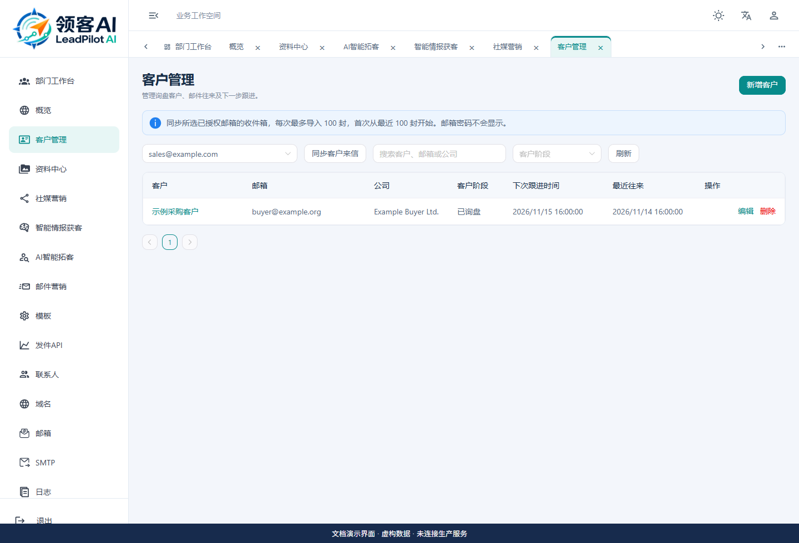
进入概览，选择域名与时间，结合邮件服务器日志、任务统计、退信、打开/点击覆盖和队列观察。
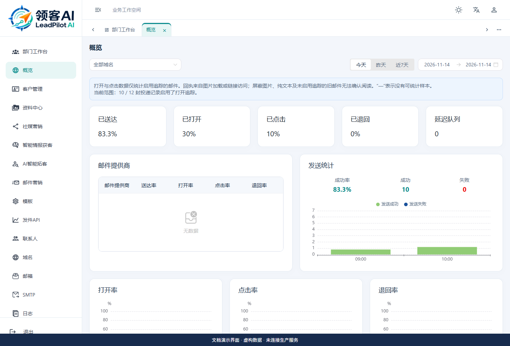
推荐每日检查：未完成任务、unknown、待审批、预算耗尽、授权过期、退信异常、退订处理、客户跟进、磁盘空间及备份。报表导出需要权限，不能把客户明细发布到公共 GitHub。
| 现象 | 先检查 | 不应采取的操作 |
|---|---|---|
| 菜单/按钮不见 | 角色操作权限、数据范围、资源授权、账号状态 | 猜旧接口或绕过前端 |
| 新邮箱创建失败 | 密码规则；空 API 请求的私有默认密码配置 | 恢复硬编码共享密码 |
| AI 模型不可选 | 服务启用、密钥、协议、模型能力和预算 | 把保存成功当作可调用 |
| 线索不发信 | 来源、验证有效期、订阅/抑制、冷却、计划状态 | 强制将未知地址标为有效 |
| 邮件 pending 很久 | 共享额度、窗口、授权、发送日志和队列 | 盲目增并发或重复新建任务 |
| 社媒无法发布 | 应用审批、账号模式、实际权限、审核版本、令牌 | 填写虚假帖子 ID |
| 状态 unknown | 外部平台/SMTP 回执与后台日志 | 未核查就重试 |
| AI 密钥恢复后失效 | 数据库与 .ai-master-key 是否配套 |
仅恢复数据库并覆盖主密钥 |
| GitHub 克隆后无法编译 | 私有 SQL、依赖、前端产物与配置是否齐全 | 将私钥/数据库脚本强行提交 |
任何“成功”应说明层级：保存成功、验证通过、入队成功、外部接受、最终投递或业务确认。正式验收至少覆盖权限隔离、受控目标投递、退订、回信、平台授权及 unknown 恢复。截图与本手册不能替代这些验收。
领客AI · LeadPilot AI｜中文运维指南｜版本 1.0｜2026-11-14
本指南提供操作步骤，不表示本次已执行生产部署、备份或恢复。示例在项目根目录执行，服务名保留源码中的实际 Compose 名称。修改生产前必须确认目标、备份、停机窗口和回滚负责人。
GitHub 包含应用源码、文档、演示截图和本次明确交付的 PDF。普通安装包、压缩包、编译产物、运行数据、SQL、私钥和凭据保持忽略。PDF 是本次用户授权的文档交付物，不是应用安装包。
仅克隆不能完成后端构建。 下面的 Go 源码通过 go:embed 引用被忽略的私有 SQL：
core/internal/service/governance/：migration.sql、growth.sql、delivery.sql、statistics.sql、social.sql、master.sql。core/internal/testsupport/：base.sql。另外，初始化脚本、环境、证书和目标实例已有运行配置应由管理员私有管理。取得与版本配套的文件后放回原路径，不将 SQL 改名隐藏提交。文档与源码归档不能替代完整可运行备份。
建议先在隔离 Linux/Docker 环境安装：Docker Engine/Compose、Node.js 22、与锁文件匹配的 pnpm，以及 Go 1.23.2。Windows 原生 Go 构建不等于完整 Linux 邮件服务可运行。
git clone https://github.com/dwjacken-star/LeadPilotAI.git
cd LeadPilotAI
git log -1 --oneline
go:embed 引用。.env.example 复制为 .env，在私有环境中填写数据库/Redis/管理员配置；生产已有 .env 不覆盖。.env、私钥、资料主密钥和备份设置限制访问的文件权限。新增邮箱的空密码后端回退由私有 DEFAULT_NEW_MAILBOX_PASSWORD 控制，未配置时拒绝空密码创建。不要在源码重新加入默认密码。
cd core/frontend
pnpm install --frozen-lockfile
pnpm build
pnpm i18n:check
pnpm test:workspace
pnpm test:repair
cd ../..
前端产物在 core/frontend/dist，部署时由 Dockerfile 复制到 Core 公共资源目录。build:git 含 Git 拉取和复制行为，build:deploy 含部署脚本；仅验证构建时使用普通 build，不要误触部署快捷入口。
先补齐私有 SQL，再在 core 中明确构建正式入口：
cd core
go mod download
go build -mod=readonly -trimpath -o ../.tools/leadpilot-core main.go
go test ./internal/service/mail_boxes ./internal/controller/mail_boxes ./internal/controller/settings
cd ..
仓库存在开发入口，不应未经核查使用 go build . 把多个 main 一起编译。集成测试在设置 BM_TEST_PG_HOST 等变量后会创建/清理测试库；只允许指向具有创建/删除权限的隔离测试实例，不指向生产。未配置时部分测试会跳过，跳过不代表完整验证通过。
node --test scripts/check-publish.test.cjs
git ls-files -ci --exclude-standard
node scripts/check-publish.cjs
发布检查以暂存区为准，不是全面安全审计。代码内的简单字符串密码、业务隐私或图片信息仍需人工审查。
默认编排引用上游 Core 镜像。部署定制代码应使用定制覆盖：
docker compose -f docker-compose.yml -f docker-compose.enterprise.yml config --quiet
docker compose -f docker-compose.yml -f docker-compose.enterprise.yml build core-billionmail
在已批准的变更窗口、完成备份并确认脚本版本后启动/更新：
docker compose -f docker-compose.yml -f docker-compose.enterprise.yml up -d
这些是部署示例，不是本次已执行的命令。不要把生产升级误当作全新安装：保留现有 .env、数据库、邮箱数据、Postfix 队列、资料目录、主密钥、镜像及服务授权。不要执行 down -v 清空持久化卷，也不要用上游更新脚本替换定制 Core。
升级时应避免新旧邮件调度器同时运行；按审核计划切换 Core，验证迁移和任务租约。单纯启动多个实例不等于高可用。
只读检查示例：
docker compose ps
docker compose logs --tail=120 core-billionmail
docker compose logs --tail=80 pgsql-billionmail
docker compose logs --tail=80 postfix-billionmail
docker compose logs --tail=80 dovecot-billionmail
docker compose logs --tail=80 rspamd-billionmail
日志可能包含内部邮箱、文件路径或请求信息；提供给外部前先脱敏，不直接放入 GitHub。
上线验收至少确认：
备份必须覆盖：PostgreSQL、.env 和配置、SSL 私钥/证书、core-data（含资料与 .ai-master-key）、邮箱数据、相关队列、原应用镜像和版本信息。
示例仅展示数据库逻辑备份；它不是完整系统备份：
umask 077
BACKUP_DIR="backup/manual-$(date +%Y%m%d-%H%M%S)"
mkdir -p "$BACKUP_DIR"
docker compose exec -T pgsql-billionmail sh -c \
'exec pg_dump -Fc -U "$POSTGRES_USER" "$POSTGRES_DB"' \
> "$BACKUP_DIR/database.dump"
test -s "$BACKUP_DIR/database.dump"
docker compose images > "$BACKUP_DIR/images.txt"
git rev-parse HEAD > "$BACKUP_DIR/source-version.txt"
文件/邮箱/队列的备份需按实例实际持久化路径执行，并考虑正在写入数据的一致性。采用受控维护窗口或一致性快照；不要把运行中目录的随意拷贝当作完整一致备份。
升级流程：确认目标版本 → 完整备份 → 停止旧 Core 交接新任务 → 更新匹配前后端和私有 SQL → 检查追加迁移 → 验证权限/数据/队列 → 受控试发 → 恢复业务。
回滚先暂停外发任务，记录不确定的提交。恢复上一版本应用与匹配的数据/配置需使用已演练方案；若只回退旧应用而保留新部门账号，旧代码可能缺少新的访问边界，必须先控制相关账号与 API 权限。不可未经批准自动清库或执行破坏式数据库恢复。
停止任务不撤回已提交邮件/帖子，回滚也不会自动撤销外部动作。unknown 记录要单独核查，以防恢复后重复发送。
| 问题 | 检查顺序 | 处理原则 |
|---|---|---|
| 启动失败 | 私有 SQL/配置 → 数据库连接 → 迁移错误 → Docker socket → 日志 | 保存错误证据，不绕过失败迁移启动 |
| 登录/权限问题 | HTTPS/SafePath → 账号状态 → Token → 部门/角色 → LegacyBoundary | 不通过解除全部权限解决 |
| 前端白屏 | 入口与异步资源是否配套 → 浏览器错误 → API 信封 → 缓存/版本 | 保留可复现请求；不当作登录成功 |
| 邮件停滞 | 状态/授权 → 上层额度 → 窗口 → SMTP/队列 → 退信 → 外网限制 | accepted 与 delivered 分开核对 |
| AI/搜索失败 | 协议/模型 → 端点 → 私有密钥 → 额度 → 解析/来源 | 不伪造返回或无限重试 |
| 社媒失败 | 应用审批 → 账号模式 → 授权/Token → 内容审核 → 429/unknown | 遵循平台退避；未知先核查 |
| 恢复后解密失败 | 数据库与原 .ai-master-key、资料路径、访问权限 |
不覆盖主密钥，不公开密钥 |
| 磁盘异常 | 数据/日志/队列/上传目录与保留策略 | 先分析占用，不能删除真实邮箱或队列救急 |
在已安装 Playwright Core、浏览器、前端依赖和已有构建时执行：
node scripts/docs/generate-diagrams.cjs
node scripts/docs/capture-ui.mjs
node scripts/docs/build-handbook.cjs
python scripts/docs/validate-handbook.py
PLAYWRIGHT_MODULE 可以指定 Playwright Core 的模块文件；DOC_BROWSER 指定本机 Chromium/Edge 可执行文件。默认工具路径是当前文档生成环境的本地路径，新机器应显式设置，不提交依赖目录或浏览器二进制。
截图脚本只允许本地界面资源并拦截虚构 API 返回；文档不调用生产。Markdown 和图源可独立阅读，即使没有 PDF 生成工具也可使用。
发布前运行链接/图片/PDF验证和敏感信息检查；确认图中无真实人员、客户、Token、私钥、邮件正文或财务数据，再提交并推送。